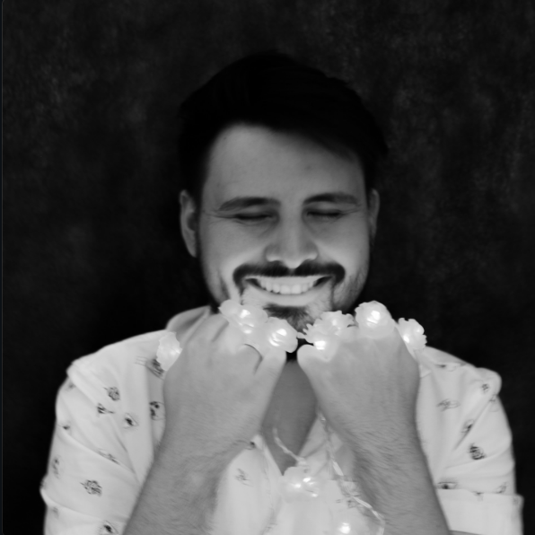

Gabriel Ferraz — SEO e Copywriting
Gabriel Ferraz

Redator publicitário com experiência em SEO e copywriting.
Desde 2019, desenvolvo conteúdos para marcas de diferentes setores, já atendi mais de 100 empresas no mercado, dentro e fora do país.
Meu ponto forte é a redação SEO, combinando pesquisa, clareza e
adaptação de linguagem. Também escrevo copy e conteúdos para redes
sociais, com atenção ao público e ao objetivo de cada peça.
Trabalhos em destaque
Alfa Brasil · Redação SEO
UNESP, Unicamp e Fuvest: quais as diferenças nos vestibulares?
A partir de um tema recebido, desenvolvi a escolha da
palavra-chave e a redação do artigo. Para orientar o conteúdo,
analisei os resultados de busca do Google e os conteúdos
concorrentes.
Minha participação: análise de buscas e
concorrentes, definição da palavra-chave e redação.
Ler o artigo publicado →
Elyt Móveis · Redação SEO
Cadeira Dublin para escritório
Desenvolvi o conteúdo a partir de uma palavra-chave recebida,
aplicando técnicas de SEO à redação do texto sobre o produto.
Minha contribuição: elaboração do texto e
aplicação de técnicas de SEO a partir da palavra-chave fornecida.
Ler o texto publicado →
Otto LT · Redação SEO
Fabricante de estabilizador trifásico
Produzi o conteúdo sobre fabricante de estabilizador trifásico
a partir de uma palavra-chave recebida, aplicando técnicas de
SEO ao desenvolvimento do texto.
Minha contribuição: elaboração do texto e
aplicação de técnicas de SEO a partir da palavra-chave fornecida.
Ler o texto publicado →
Keepers Logística · Conteúdo para redes sociais
Armazenagem, movimentação de produtos e certificação ISO 9001
Desenvolvi o conteúdo textual de uma publicação sobre
armazenagem e movimentação de produtos, abordando o tema
da certificação ISO 9001.
Minha contribuição: criação e redação do
conteúdo textual. A arte foi realizada por outro profissional.
Ver publicação no Instagram →
Agência 4UP · Conteúdo para redes sociais
Cinco motivos para ter um site em 2024
Desenvolvi o conteúdo textual da publicação que apresenta
cinco motivos para ter um site em 2024.
Minha contribuição: criação e redação do
conteúdo textual. A arte foi realizada por outro profissional.
Ver publicação no Instagram →